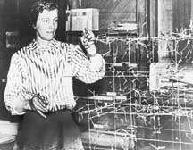

Biography
Dorothy Hodgkin is an incredible chemist. She has many accomplishments and has received various awards. She is most widely known for her discovery of the science of protein crystallography.
Just even as a young child, Dorothy had always loved chemistry. She especially loved any experiment involved with crystals. That is where she developed her interest in becoming a researcher and her increased interest blossomed into some amazing discoveries. Her method of seeing crystal's structures was used in the 1930s to map extremely large and complex molecules. With much more further intensive study, she was able to successfully determine the structure of penicillin and vitamin B12. Which is the most complex structure of all vitamins.